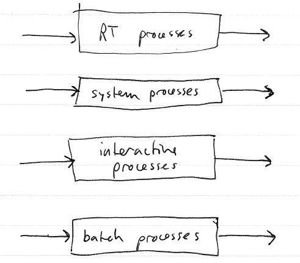
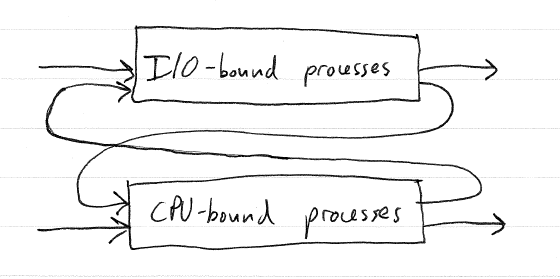

Recall that there is some overhead associated with doing a context
switch. It is the time needed to
A typical software context switch will result in the execution of
hundreds or thousands of instructions. Also, some additional CPU
state (such as data residing in a hardware cache, and information
associated with the original process's page table) may need to be
discarded, costing some additional time.
This overhead affects the choice of the scheduling quantum. A
small quantum is good because it minimizes waiting time. However,
more frequent context switches increases the context switch overhead,
meaning that processes spend less time doing useful work.
Approaches to this problem:
Hardware register contexts: Context switches are done directly by the CPU. Register contexts are stored in special high-speed memory. Examples: old Sun workstations (and maybe new ones too?)
Recent trends
Faster
CPUs: CPUs are getting faster and faster. Because the cost
of a context switch is fixed with respect to number of instructions
executed, the relative cost of context switches is decreasing.
So, a smaller quantum may not increase context switch overhead very
much. (Caveat: the costs associated with caching and MMU state
have not really improved, so number of instructions isn't really a very
good measure of context switch overhead.) Example: Linux
historically has used 100 ms as its quantum. Recent
experimentation with smaller values (e.g., 10 ms) have shown that the
increase in overhead is not too great.
Hardware multithreading: A major trend in CPU design is hardware multithreading, where each CPU core is designed to execute a number of processes (e.g. 4) at a time. The CPU works by executing one instruction at a time from each active process in round-robin fashion.
When there are distinct classes of processes. Each process is
associated with its own queue.
Each queue can have its own scheduling algorithm: FCFS, RR,
priority, etc. This allows each class of process to be allocated
to a queue that ensures that its needs are met. For example,
interactive processes can be assigned to a higher-priority queue with a
short quantum to ensure that response time is low.

One question is how to divide CPU time between the queues. Possibilities:
Strict multilevel queue scheduling is simple to implement, but is
inflexible. The problem is that the "class" of a process may
change over time. For example, the application might require
periods of interactivity, but also have periods of computation.
Idea with MFQS is to allow processes to move between queues as their
dynamic characteristics change.
Example:
Processes that generally do not use their entire quantum because
they request IO frequently are classified as I/O bound.
(Interactive processes will generally fall into this category.)
They should be allocated to a higher-priority queue with a shorter
quantum.
Processes that regularly use their entire quantum are classified as
CPU-bound. They should be allocated to a higher-priority queue
with a longer quantum.

Priority can be used to schedule processes within a queue.
Aging can be used to boost the priority of processes that have not been
scheduled recently, to prevent starvation.
Scheduling on a system with multiple processors makes the picture
more complex.
Two issues:
Processor
affinity: As a process runs on a given physical CPU, it will
tend to build up state on that processor: e.g., data in the processor's
cache. For this reason, it is more efficient to reschedule a
process on a CPU that it has run on recently than to move it to a
different CPU.
Load
balancing: We do not want to leave any CPUs idle.
Therefore, processes must be able to move from one CPU to another to
ensure full utilization.
Obviously, these goals contradict each other to some degree.
One possible solution: each CPU has its own run queue and is
scheduled independently. A CPU that becomes idle will steal a
process from another CPU's run queue.
The situation is made even more complex by symmetric multithreading,
where multiple logical CPUs share some resources with each other, e.g.,
an L1 cache. This makes it less expensive to move a process
betwen logical CPUs on the same pysical processor than between logical
CPUs on different physical processors. E.g., hyperthreading in
recent Intel CPUs.
In "Dual core" CPUs, the cores are more like independent CPUs.
For example they have their own L1 caches and (generally) as much L2
cache per core as a normal "single core" CPU.
The implementation of the scheduler in the OS kernel boils down to
three main parts:
The dispatcher
is the code that activates a waiting process by restoring its register
context. The amount of time needed to activate a process is the dispatch latency.
The run
queue data structure is the data structure used to store
processes that are in the ready state. Note that this data
structure is not necessarily a queue, and doesn't really behave like
one in the strict sense.
The scheduler
is the code that decides, when a CPU is available, which process to
activate. This is where the scheduling algorithm per se is
implemented.
Obviously, these components are related. For example, the run
queue data structure is generally written so that the scheduler can
find the process that will run next quickly.
For example: say that we have a static priority scheduler.
What would be a good data structure to use for the run queue?
We want to be able to find the
highest-priority process quickly and remove it. We also want to
be able to quickly insert a process.
The design of the run queue data structure is a complex topic, and
an area of active research.
E.g. the O(1) scheduler in Linux.
Can insert a process, pick the highest priority process, and update the
priority of a ready process, all in constant (O(1)) time.
We have talked a bit about the dispatcher in GeekOS in the
discussion of how interrupts are handled. There are two ways that
kernel threads are dispatched in GeekOS. The Switch_To_Thread function in
lowlevel.asm is used when a kernel thread voluntarily relinquishes the
CPU: either because it is waiting and has been moved to a wait queue,
or it used a complete quantum and has been moved to the run
queue. The Handle_Interrupt
function also does thread dispatch, because when the interrupt or
system call handler has completed, the thread will eventually run again.
The variable g_currentThread
in kthread.c always points to the Kernel_Thread data structure (PCB) of
the kernel thread that is currently executing on the CPU.
The variable g_needReschedule
in kthread.c controls whether or not the Handle_Interrupt function will
suspend the current kernel thread and choose a new thread to run after
the interrupt handler completes. Essentially, it is a
notification to the dispatcher that it is time to suspend the current
kernel thread and choose a new kernel thread to run.
[Look at the interrupt handler for the
timer interrupt. Observe g_needReschedule
being set to true.]
The run queue is the s_runQueue
variable in kthread.c. Its type is Thread_Queue, which is a
doubly-linked list of Kernel_Thread objects. The threads are not
stored in any order. (This means that picking the
highest-priority thread is an O(n) worst case operation.)
The Get_Next_Runnable
function in kthread.c is responsible for picking and removing the
"best" thread from the run queue. This is the function that is
called from the dispatch code when it is time to pick a new thread to
run.
The Find_Best function in
kthread.c is responsible for picking the best thread from the run
queue. It chooses the highest-priority thread from the
queue. If there are multiple threads with the same priority, it
will pick the first one. Because threads are always added to the end of the run queue, this means
that processes with the same priority are scheduled in round-robin
fashion.